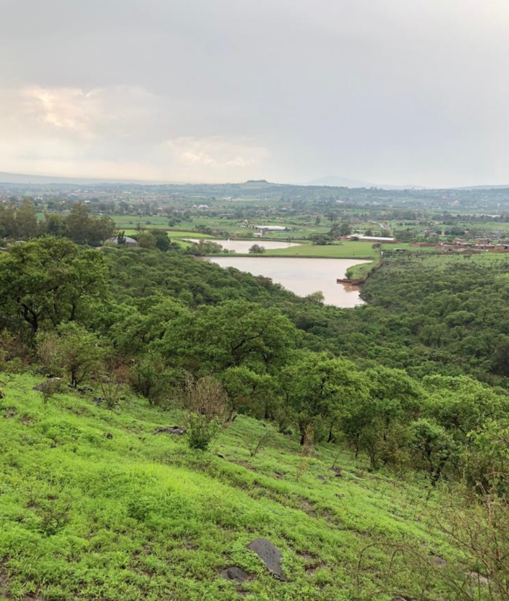
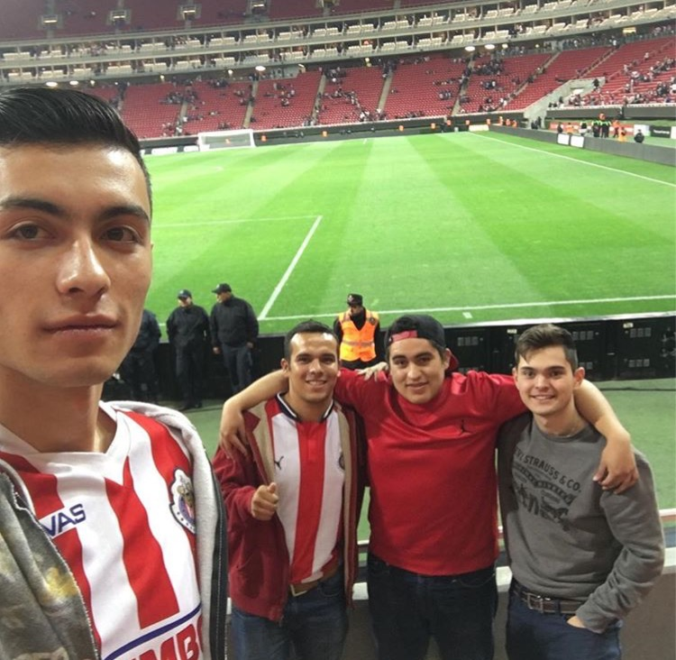

About Me
Currently a student at Long Beach City College, I am a first year computer science student where so far I have taken classes as Introduction to computer science and Data Structures and Algorithms, I know I have a lot to learn but little by little I will get where I want.Some things about myself is that I really like soccer and food, especially tacos and lasagna haha:), in my free time I like to read and make small programs trying to improve my syntax in C++; My goal is to keep improving in my coding skills and transfer to get my bachelor's degree.
Me at Metropolitan Park of Leon, Guanajuato, Mexico: This is My favorite Place in Guadalajara: Me and friends at the Chivas Stadium:
"Presas El Toro"
 In my first project I had to do a program where "a bank" wanted a program that is able to read data from files and the calculate and display the final balance of money invested in a savings account.
First ProjectMy Second project involved the use of 2D arrays to display data about the production of apples and oranges in certain countries around the world.
Second ProjectMy Third and most recent project was to read and sort data by population in a "Census File" where originally the file was sorted alphabetically by state.
Third Project